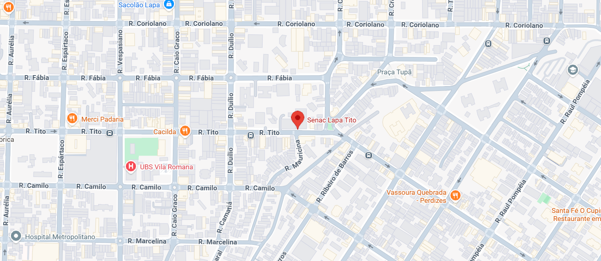

Se você é um amante da música, está em busca de um novo
instrumento musical e não abre mão da qualidade, chegou ao lugar
certo! Aqui em nossa loja você encontra os melhores itens, como:
teclado, piano (digital e acústico), contrabaixo, bateria, guitarra,
violão, sopro e muito mais! Nossos instrumentos possuem o selo de
qualidade das melhores marcas do mercado! Escolha os seus favoritos
e os receba em casa com toda a comodidade que você precisa.
Confira nossas opções disponíveis e tenha em mãos instrumentos de
ponta!
Nossa loja - Instrumentos Musicais

NYLON ACÚSTICO NATURAL
BRILHANTE VILÃO YAHAMA C70 II CLÁSSICO
NYLON ACÚSTICO NATURAL
BRILHANTE VILÃO YAHAMA C70 II CLÁSSICO
NYLON ACÚSTICO NATURAL
BRILHANTE VILÃO YAHAMA C70 II CLÁSSICO
NYLON ACÚSTICO NATURAL
BRILHANTE

Nossa loja - Instrumentos Musicais
Está situada na Rua Tito, 54 - Pompéia, próximo ao teatro Cacilda
Becker, em uma construção do século XIX, numa área de 500m2,
com uma variada gama de instrumentos, em um ambiente
agradável para toda a família!
Acesse também nossas redes sociais: